Portafolio digital
Integralmente
Portafolio Digital de Cálculo Integral
Este portafolio reúne los conceptos, fórmulas, ejercicios y aplicaciones estudiados durante el semestre en la asignatura de Cálculo Integral.
Presentación
¿Qué encontrarás en este portafolio?
El contenido está organizado por parciales. En cada tema se pueden agregar explicaciones, fórmulas, ejemplos, ejercicios resueltos, gráficas y una breve reflexión sobre lo aprendido.
Temas del segundo parcial
Proyecto integrador
Primer parcial
Fundamentos y técnicas de integración
Selecciona cada tema para desplegar el espacio donde podrás añadir teoría, fórmulas, ejercicios e imágenes.
01 Formulario
Formulario general
Fórmulas básicas de integración
En esta sección se reúnen algunas fórmulas fundamentales que sirven como apoyo para resolver integrales durante todo el semestre.
Integrales básicas y algebraicas
\[\int dx = x + C\]
\[\int x^n\,dx = \frac{x^{n+1}}{n+1} + C\]
\[\int v^n\,dv = \frac{v^{n+1}}{n+1} + C\]
\[\int \frac{dv}{v} = \ln v + C\]
\[\int e^v\,dv = e^v + C\]
\[\int a^v\,dv = \frac{a^v}{\ln a} + C\]
Integrales trigonométricas
\[\int \operatorname{sen} v\,dv = -\cos v + C\]
\[\int \cos v\,dv = \operatorname{sen} v + C\]
\[\int \tan v\,dv = -\ln |\cos v| + C\]
\[\int \cot v\,dv = \ln |\operatorname{sen} v| + C\]
\[\int \sec v\,dv = \ln |\sec v + \tan v| + C\]
\[\int \csc v\,dv = \ln |\csc v - \cot v| + C\]
\[\int \sec^2 v\,dv = \tan v + C\]
\[\int \csc^2 v\,dv = -\cot v + C\]
\[\int \sec v\,\tan v\,dv = \sec v + C\]
\[\int \csc v\,\cot v\,dv = -\csc v + C\]
Nota: este formulario funciona como apoyo rápido para identificar integrales inmediatas y recordar fórmulas importantes del curso.
02 Integrales Indefinidas
Concepto
¿Qué es una integral indefinida?
La integral indefinida es el conjunto de las infinitas primitivas que puede tener una función.
Esto significa que una misma función puede tener varias primitivas que solo se diferencian por una constante. Por esa razón, al resolver una integral indefinida siempre se agrega la constante de integración C.
Fórmula base
\[\int f(x)\,dx = F(x) + C\]
Toda integral indefinida representa una familia de primitivas que se diferencian por una constante.
Importancia de la constante C
La constante de integración C se añade porque la derivada de una constante es cero. Por ello, todas las funciones de la forma F(x) + C tienen la misma derivada y forman una familia de primitivas.
Propiedades
Propiedades de la integral indefinida
Integral de una suma de funciones
\[\int \left[f(x)+g(x)\right]dx = \int f(x)\,dx + \int g(x)\,dx\]
La integral de una suma de funciones es igual a la suma de las integrales de esas funciones.
Producto de una constante por una función
\[\int k\,f(x)\,dx = k\int f(x)\,dx\]
La integral del producto de una constante por una función es igual a la constante multiplicada por la integral de la función.
Elementos
Partes de la integral indefinida
Símbolo de integración
Indica que se realizará una operación de integración.
Integrando
Es la función que se va a integrar.
Diferencial
Indica la variable con respecto a la cual se realiza la integración.
Primitiva
Es una función cuya derivada es igual al integrando original.
Constante de integración
Es un valor numérico real que representa la familia infinita de soluciones.
Recurso audiovisual
Video explicativo de integrales indefinidas
Haz clic en el botón para ver el recurso completo en YouTube.
03 Integrales por Sustitución
Concepto
¿Qué es la integración por sustitución?
El método de integración por sustitución, también llamado cambio de variable, se basa en la derivada de una función compuesta.
Para cambiar de variable se identifica una parte de la expresión que se va a integrar y se reemplaza por una nueva variable, normalmente u o t. De esta manera, la integral original se transforma en otra más sencilla.
Fórmula base
\[\int f\!\left(u\right)\,u\prime\,dx = F(u)+C\]
Este método simplifica una integral cuando aparece una función compuesta junto con su derivada.
Idea principal
\[u=g(x),\qquad du=g\prime(x)\,dx\]
Si dentro de la integral aparece una función y también su derivada, el cambio de variable permite sustituir ambas expresiones y trabajar con una integral más simple.
Procedimiento
Pasos para integrar por cambio de variable
Realizar el cambio de variable
Se identifica una expresión conveniente y se define u = g(x). Después se deriva: du = g'(x) dx.
Sustituir en la integral
Se reemplazan la expresión original y su diferencial por la nueva variable y por du.
Resolver la nueva integral
Si la integral resultante es más sencilla, se integra con respecto a la nueva variable.
Volver a la variable inicial
Al finalizar, se reemplaza la variable u o t por la expresión original en términos de x.
Cambios de variable
Cambios de variables usuales
A continuación se presentan algunos cambios de variable empleados para simplificar diferentes tipos de integrales.
Raíz de la forma √(a² − x²)
\[\int R\!\left(x,\sqrt{a^{2}-x^{2}}\right)dx\]
Cambio sugerido: x = a sen t
Raíz de la forma √(a² + x²)
\[\int R\!\left(x,\sqrt{a^{2}+x^{2}}\right)dx\]
Cambio sugerido: x = a tan t
Raíz de la forma √(x² − a²)
\[\int R\!\left(x,\sqrt{x^{2}-a^{2}}\right)dx\]
Cambio sugerido: x = a sec t
Radicales racionales
\[\int R\!\left(x,\sqrt[n]{\frac{ax+b}{cx+d}}\right)dx\]
Cambio sugerido: t = (ax + b)/(cx − d)
Radicales con distintos índices
Si aparecen varios radicales con un mismo radicando lineal ax + b, el cambio de variable puede tomarse como t elevado al mínimo común múltiplo de los índices.
Si R(sen x, cos x) es par
| Cambio | sen x | cos x | tan x | dx |
|---|---|---|---|---|
| \(t=\tan x\) | \(\frac{t}{\sqrt{1+t^{2}}}\) | \(\frac{1}{\sqrt{1+t^{2}}}\) | t | \(\frac{dt}{1+t^{2}}\) |
Si R(sen x, cos x) no es par
| Cambio | sen x | cos x | tan x | dx |
|---|---|---|---|---|
| \(t=\tan\left(\frac{x}{2}\right)\) | \(\frac{2t}{1+t^{2}}\) | \(\frac{1-t^{2}}{1+t^{2}}\) | \(\frac{2t}{1-t^{2}}\) | \(\frac{2\,dt}{1+t^{2}}\) |
Nota: algunas de estas sustituciones también se relacionan con el tema de sustitución trigonométrica, que se desarrollará en una sección posterior del portafolio.
Recomendaciones
¿Cómo escoger el cambio de variable?
Busca una expresión que se repita dentro de la integral y que pueda reemplazarse por una sola variable.
Comprueba que la derivada de la expresión elegida también aparezca, completa o parcialmente, en el integrando.
Si falta una constante, puede multiplicarse y dividirse para obtener el diferencial necesario.
El cambio es adecuado cuando la nueva integral es más sencilla que la expresión original.
Recurso audiovisual
Introducción y ejemplo de integración por sustitución
Haz clic en el botón para ver el recurso completo en YouTube.
04 Integración por Partes
Concepto
¿Qué es la integración por partes?
El método de integración por partes permite calcular la integral de un producto de dos funciones. Se basa en transformar la integral original en otra más sencilla mediante la selección de dos partes: u y dv.
Este método resulta especialmente útil cuando una de las funciones se simplifica al derivarla y la otra puede integrarse fácilmente.
Fórmula base
\[\int u\,dv = uv-\int v\,du\]
La clave del método es elegir correctamente la función u y la parte dv.
Interpretación de la fórmula
Después de escoger u y dv, se calcula du derivando u y se obtiene v integrando dv. Luego se sustituyen estos elementos en la fórmula para transformar la integral original en otra más fácil de resolver.
Elección de funciones
Regla LIATE
Para escoger la función que se utilizará como u, se recomienda seguir este orden de prioridad:
Logarítmicas
Ejemplo: ln(x). Generalmente se eligen como u.
Trigonométricas inversas
Ejemplo: arcsen(x), arccos(x) y arctan(x).
Algebraicas
Incluye polinomios como x, x² o x³.
Trigonométricas
Ejemplo: sen(x) y cos(x).
Exponenciales
Ejemplo: eˣ o aˣ.
Recomendaciones
Consejos para aplicar el método
Las funciones logarítmicas y trigonométricas inversas suelen elegirse como u.
Los polinomios también suelen elegirse como u porque disminuyen de grado al derivarlos.
Las funciones trigonométricas y exponenciales normalmente se seleccionan como dv, ya que son fáciles de integrar.
Cuando u es un polinomio de grado n, el proceso puede repetirse hasta n veces.
Cuando la integral contiene solamente un logaritmo, se puede tomar u = ln(x) y dv = dx.
Cuando la integral contiene solamente una función trigonométrica inversa, se toma esa función como u y dv = dx.
Procedimiento
Pasos básicos
- Identificar el producto de funciones.
- Escoger u usando la regla LIATE.
- Tomar la parte restante como dv.
- Calcular du y v.
- Sustituir los valores en la fórmula.
- Resolver y simplificar la nueva integral.
Recurso audiovisual 1
Explicación de la fórmula
Haz clic en el botón para ver el recurso completo en YouTube.
Recurso audiovisual 2
Ejemplo de integración por partes
Haz clic en el botón para ver el recurso completo en YouTube.
05 Integrales Definidas
Concepto
¿Qué es una integral definida?
La integral definida representa un tipo específico de integral que se emplea para calcular el valor de las áreas que quedan entre una curva y el eje horizontal dentro de un intervalo determinado.
Este concepto puede aplicarse en múltiples disciplinas y situaciones, como en biología para modelar el crecimiento de poblaciones, en robótica mediante algoritmos para el seguimiento de líneas y en arquitectura para calcular volúmenes de objetos sólidos, entre otras aplicaciones.
Definición
Dada una función f(x) de una variable real x y un intervalo [a, b] de la recta real, la integral definida es igual al área limitada entre la gráfica de f(x), el eje de abscisas y las líneas verticales x = a y x = b.
\[\int_{a}^{b} f(x)\,dx = F(b)-F(a)\]
Propiedades
Propiedades de la integral definida
Cambio del orden de los límites
\[\int_{a}^{b} f(x)\,dx = -\int_{b}^{a} f(x)\,dx\]
El valor de la integral definida cambia de signo cuando se permutan los límites de integración. Esta propiedad puede utilizarse para reorganizar los límites y trabajar con los signos de forma más cómoda.
Límites de integración iguales
\[\int_{a}^{a} f(x)\,dx = 0\]
Cuando ambos límites coinciden, la integral definida es igual a cero. En este caso no existe un intervalo ni un área que calcular.
Descomposición de un intervalo
\[\int_{a}^{b} f(x)\,dx = \int_{a}^{c} f(x)\,dx + \int_{c}^{b} f(x)\,dx\]
Cuando c es un punto interior del intervalo [a, b], la integral puede descomponerse como la suma de las integrales correspondientes a los intervalos [a, c] y [c, b].
Integral de una suma de funciones
\[\int_{a}^{b}\left[f(x)+g(x)\right]dx = \int_{a}^{b}f(x)\,dx + \int_{a}^{b}g(x)\,dx\]
La integral definida de una suma de funciones es igual a la suma de sus integrales. Esta propiedad ayuda a separar expresiones extensas o agruparlas para realizar los cálculos de una forma más cómoda.
Producto de una constante por una función
\[\int_{a}^{b}k\,f(x)\,dx = k\int_{a}^{b}f(x)\,dx\]
Cuando una función está multiplicada por una constante k, la constante puede colocarse fuera de la integral.
Recurso audiovisual
Video de ejemplo de integral definida
Haz clic en el botón para ver el recurso completo en YouTube.
06 Integrales de Funciones Trigonométricas
Concepto
¿Qué son las integrales trigonométricas?
Las integrales trigonométricas contienen funciones como seno, coseno, tangente, cotangente, secante y cosecante.
Para resolverlas se utilizan fórmulas básicas e identidades trigonométricas que permiten transformar la expresión y simplificar el cálculo.
Idea principal
Para resolver estas integrales, primero se identifica la función trigonométrica presente y luego se verifica si corresponde directamente con una fórmula conocida.
Cuando aparecen potencias o productos, se aplican identidades trigonométricas para transformar la expresión y simplificar el procedimiento.
Fórmulas básicas
Fórmulas de integración trigonométrica
\[\int \operatorname{sen}x\,dx = -\cos x + C\]
\[\int \cos x\,dx = \operatorname{sen}x + C\]
\[\int \operatorname{sen}u\cdot u'\,dx = -\cos u + C\]
\[\int \cos u\cdot u'\,dx = \operatorname{sen}u + C\]
\[\int \frac{1}{\cos^2 x}\,dx = \int \sec^2 x\,dx = \int \left(1+\operatorname{tg}^2 x\right)dx = \operatorname{tg}x + C\]
\[\int \frac{u'}{\cos^2 u}\,dx = \int \sec^2 u\cdot u'\,dx = \int \left(1+\operatorname{tg}^2 u\right)u'\,dx = \operatorname{tg}u + C\]
\[\int \frac{1}{\operatorname{sen}^2 x}\,dx = \int \operatorname{cosec}^2 x\,dx = \int \left(1+\operatorname{cotg}^2 x\right)dx = -\operatorname{cotg}x + C\]
\[\int \frac{u'}{\operatorname{sen}^2 u}\,dx = \int \operatorname{cosec}^2 u\cdot u'\,dx = \int \left(1+\operatorname{cotg}^2 u\right)u'\,dx = -\operatorname{cotg}u + C\]
Procedimiento
¿Cómo se resuelven?
- Se identifica la función trigonométrica presente en la integral.
- Se verifica si coincide directamente con una fórmula básica conocida.
- Si aparecen potencias o productos, se aplican identidades trigonométricas para simplificar.
- Luego se integra la nueva expresión y se simplifica el resultado final.
Recurso audiovisual
Video explicativo
Haz clic en el botón para ver el video explicativo en YouTube.
07 Integrales por Sustitución Trigonométrica
Concepto
¿Qué es la sustitución trigonométrica?
La sustitución trigonométrica es un método utilizado para resolver integrales que contienen raíces cuadradas con expresiones especiales.
Consiste en reemplazar la variable por una función trigonométrica para transformar la raíz en una expresión más sencilla y así facilitar el procedimiento.
Expresiones típicas
\[\sqrt{a^2-x^2}\]
\[\sqrt{a^2+x^2}\]
\[\sqrt{x^2-a^2}\]
Cuando la integral contiene una de estas raíces, se selecciona la sustitución trigonométrica adecuada para simplificar el cálculo.
Sustituciones principales
Casos más utilizados
\[\sqrt{a^2-x^2}\]
Se utiliza:
\[x=a\operatorname{sen}\theta\]
\[\sqrt{a^2+x^2}\]
Se utiliza:
\[x=a\operatorname{tg}\theta\]
\[\sqrt{x^2-a^2}\]
Se utiliza:
\[x=a\sec\theta\]
Procedimiento
Pasos del método
- Primero se identifica el tipo de expresión que se encuentra dentro de la raíz.
- Después se selecciona la sustitución trigonométrica correspondiente y se calcula dx.
- Luego se aplica una identidad trigonométrica para simplificar la integral.
- Se resuelve la integral obtenida y finalmente se regresa a la variable original.
Recurso audiovisual
Video explicativo
Haz clic en el botón para ver el video explicativo en YouTube.
Segundo parcial
Aplicaciones del Cálculo Integral
En esta parte se presentan técnicas y aplicaciones geométricas estudiadas durante el segundo parcial.
01 Integración por Fracciones Parciales
Concepto
¿Qué es la integración por fracciones parciales?
Es un método algebraico que se utiliza para integrar funciones racionales de la forma P(x)/Q(x), donde el grado del numerador es menor que el grado del denominador.
Consiste en descomponer una fracción compleja en una suma de fracciones más simples, llamadas fracciones parciales, que pueden integrarse de forma directa.
Condición inicial
\[
\frac{P(x)}{Q(x)}
\]
\[
\deg P(x)<\deg Q(x)
\]
Si el grado del numerador es mayor o igual que el del denominador, primero debe realizarse una división de polinomios.
Casos principales
Formas de plantear las fracciones
Factores lineales distintos
Cuando aparece un factor de la forma (x-r), se plantea:
\[
\frac{A}{x-r}
\]
Factores lineales repetidos
Cuando aparece un factor de la forma (x-r)^k, se plantea:
\[
\frac{A_1}{x-r}+\frac{A_2}{(x-r)^2}+\cdots+\frac{A_k}{(x-r)^k}
\]
Procedimiento
¿Cómo se resuelve?
- Factorizar: se descompone completamente el denominador Q(x).
- Plantear las fracciones: se asignan constantes como A, B y C según los factores obtenidos.
- Calcular las constantes: se realiza la suma algebraica, se igualan numeradores y se hallan los valores desconocidos.
- Integrar: se resuelven las integrales simples resultantes, que normalmente producen logaritmos naturales o sustituciones sencillas.
Recurso audiovisual
Video explicativo
Haz clic en el botón para ver el video explicativo de este tema en YouTube.
02 Área Bajo la Curva
Concepto
¿Qué representa el área bajo la curva?
Es la aplicación geométrica directa de la integral definida. Permite medir el espacio bidimensional limitado por una o más funciones dentro de un intervalo cerrado.
Para resolver estos ejercicios se identifican los límites del intervalo [a,b] y la posición de las funciones respecto del eje horizontal.
Interpretación geométrica
La integral definida acumula pequeñas áreas dentro del intervalo y permite calcular el área total de la región representada en la gráfica.
Caso 1
Área entre una curva y el eje x
Si la función se encuentra por encima del eje horizontal:
\[
A=\int_a^b f(x)\,dx,\qquad f(x)\geq 0
\]
Caso 2
Área entre dos curvas
Se resta la función superior menos la función inferior:
\[
A=\int_a^b\left[f_{\text{superior}}(x)-f_{\text{inferior}}(x)\right]dx
\]
Nota: si las funciones se cruzan dentro del intervalo, se hallan los puntos de intersección, se divide el intervalo y se calcula cada área por separado.
Recurso audiovisual
Video explicativo
Haz clic en el botón para ver el video explicativo de este tema en YouTube.
03 Volumen de Sólidos de Revolución
Concepto
¿Qué es un sólido de revolución?
Es un objeto tridimensional generado al hacer rotar una región plana alrededor de un eje de rotación, generalmente el eje x o el eje y.
El volumen se calcula mediante integrales definidas y depende de la posición de la región respecto del eje de giro.
Idea principal
La región se divide en secciones muy delgadas. Al sumar los volúmenes de todas esas secciones mediante una integral, se obtiene el volumen total del sólido.
Método 1
Método de discos
Se utiliza cuando la región está pegada al eje de rotación.
\[
V=\pi\int_a^b [R(x)]^2\,dx
\]
Método 2
Método de arandelas
Se utiliza cuando la región está delimitada entre dos funciones.
\[
V=\pi\int_a^b\left([R_{\text{externo}}(x)]^2-[r_{\text{interno}}(x)]^2\right)dx
\]
Procedimiento
Pasos básicos
- Identificar el eje alrededor del cual gira la región.
- Determinar el radio exterior y, si corresponde, el radio interior.
- Establecer los límites de integración.
- Sustituir los valores en la fórmula e integrar.
Recurso audiovisual
Video explicativo
Haz clic en el botón para ver el video explicativo de este tema en YouTube.
04 Longitud de un Arco
Concepto
¿Qué es la longitud de un arco?
Es una aplicación que permite medir la distancia exacta, o longitud métrica, de un segmento de curva continua dentro de un intervalo determinado.
Para calcularla, primero se obtiene la derivada de la función y luego se utiliza una integral definida.
Fórmula principal
\[
L=\int_a^b\sqrt{1+\left[f'(x)\right]^2}\,dx
\]
Procedimiento
¿Cómo se resuelve?
- Se deriva la función para obtener f'(x).
- Se eleva la derivada al cuadrado.
- Se sustituye el resultado dentro de la raíz de la fórmula.
- Se integra en el intervalo comprendido entre a y b.
Recurso audiovisual
Video explicativo
Haz clic en el botón para ver el video explicativo de este tema en YouTube.
05 Cinemática
Concepto
¿Cómo se aplica el cálculo integral en la cinemática?
En física, las operaciones del cálculo permiten describir el movimiento de una partícula. La derivada de la posición es la velocidad y la derivada de la velocidad es la aceleración.
El proceso inverso, es decir, la integración, permite reconstruir las magnitudes del movimiento a partir del tiempo.
Relación entre magnitudes
\[a(t)\xrightarrow{\int}v(t)\]
\[v(t)\xrightarrow{\int}x(t)\]
Velocidad
Conociendo la aceleración
\[
v(t)=\int a(t)\,dt+C
\]
Desplazamiento
Conociendo la velocidad
\[
\Delta x=\int_{t_1}^{t_2}v(t)\,dt
\]
Procedimiento
¿Cómo se resuelven estos problemas?
- Se identifica la magnitud conocida: aceleración, velocidad o posición.
- Se integra la función para recuperar la magnitud anterior del movimiento.
- Si existen condiciones iniciales, se utilizan para calcular la constante de integración.
- En un intervalo definido, se evalúan los límites para hallar el desplazamiento o cambio total.
Recurso audiovisual
Video explicativo
Haz clic en el botón para ver el video explicativo de este tema en YouTube.
Proyecto integrador
Aplicación del cálculo en un proyecto
Monitoreo y cálculo de precipitación acumulada mediante integración definida
Este proyecto consiste en el desarrollo de un sistema que permite registrar la hora y la intensidad de la lluvia para calcular la precipitación acumulada durante un periodo determinado. La idea principal es representar la intensidad de la lluvia como una función del tiempo y aplicar la integral definida para obtener la cantidad total de precipitación.
Objetivo general
Desarrollar un sistema para el monitoreo y cálculo de la precipitación acumulada que permita registrar la hora y la intensidad de la lluvia, aplicando la integral definida para determinar la cantidad total de precipitación y representar los resultados mediante el área bajo la curva y una gráfica de intensidad en función del tiempo.
¿Cómo funciona el cálculo en el proyecto?
El sistema representa la intensidad de la lluvia mediante una función I(t), donde la intensidad cambia a lo largo del tiempo. A partir de esa función se aplica la integral definida para sumar las pequeñas variaciones registradas dentro de un intervalo de tiempo determinado.

Donde P es la precipitación acumulada, I(t) es la intensidad de la lluvia, y a y b representan el intervalo de tiempo analizado.
Alcance y resultados
- Registro de la hora e intensidad de la lluvia.
- Cálculo de la precipitación acumulada.
- Representación gráfica de la intensidad de lluvia en función del tiempo.
- Visualización de datos como precipitación acumulada, promedio, intensidad máxima y total de mediciones.
Interfaz principal del sistema desarrollado para el monitoreo inteligente de lluvia.